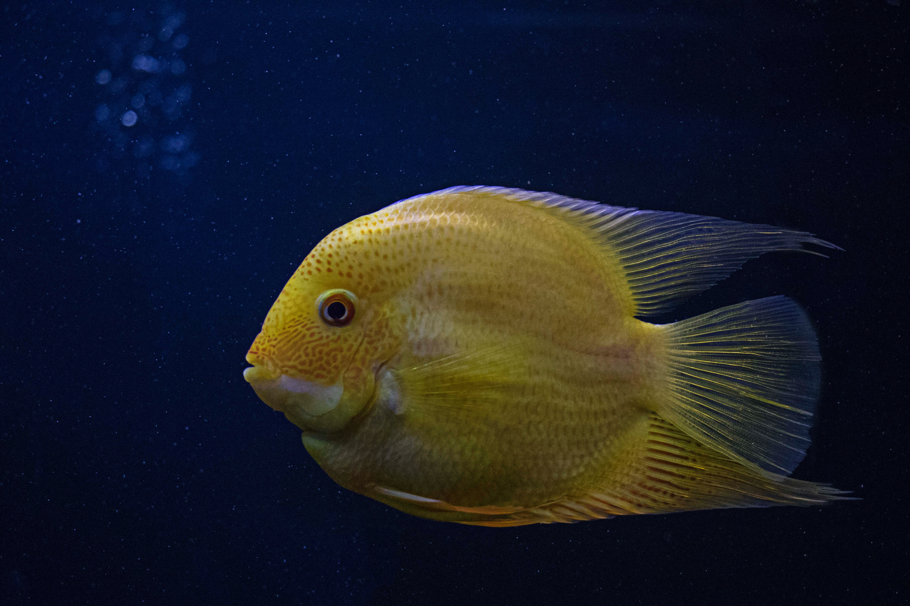
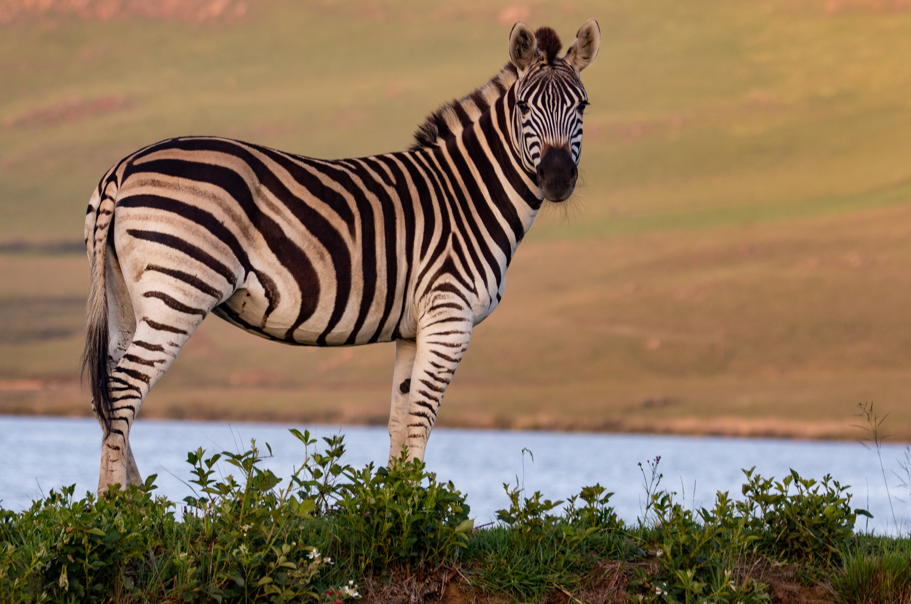

Cats
The cat is a domestic species of small canivorus mammal.

Dogs
The term "domestic dog" refers to any of several hundred breeds of dog in the world today.

Fish
Fish are aquatic, craniate, gill-bearing animals that lack limbs with digits.

Monkey
Monkey is a common name that may refer to most mammals of the infraorder Simiiformes, also known as the simians.

Zebra
Zebras dazzling stripes make them among the most recognisable mammals.